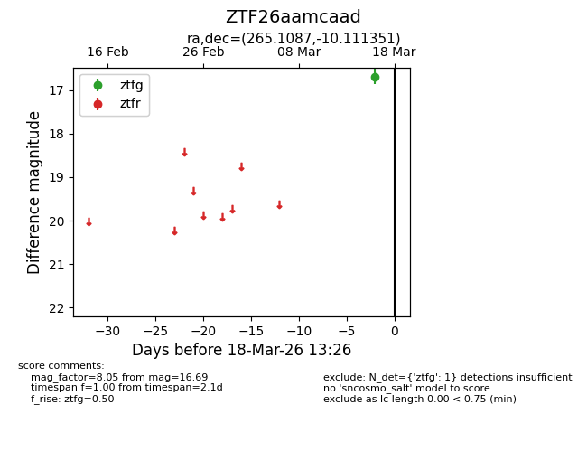
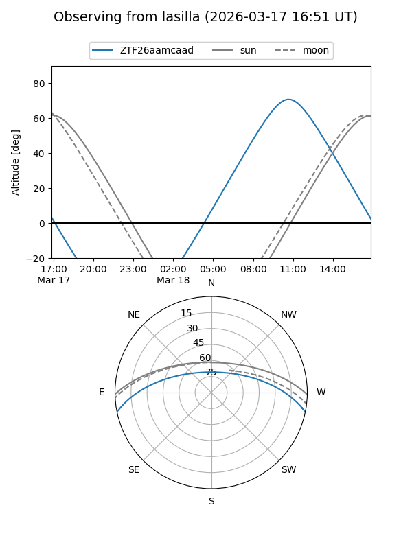
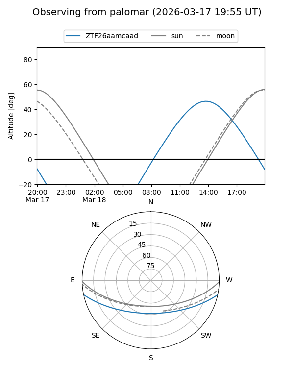

ZTF26aamcaad
Target ZTF26aamcaad at 2026-03-18 13:28
Aliases and brokers:
FINK: link
Lasair: link
ALeRCE: link
alt names
ZTF26aamcaad (ztf,fink_ztf)
Coordinates:
equatorial (ra, dec) = 265.1087,-10.11135
equatorial (HMS+DMS) = 17:40:26.10,-10:06:40.86
galactic (l, b) = (15.5719,+10.78178)
Flags:
Photometry:
last ztfg=16.69
1 ztfg detections
Lightcurve

Visibility


Additional plots